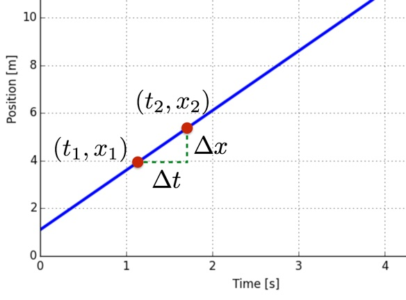
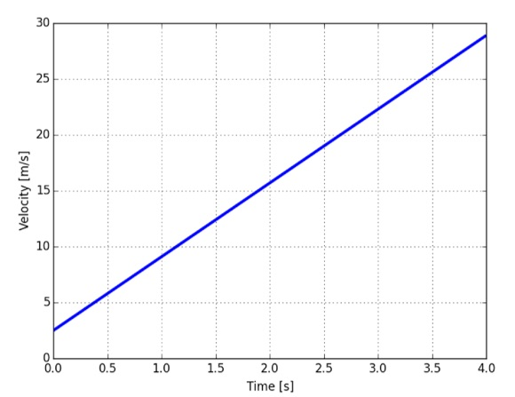

import numpy as np
a = np.array([1,2,0])Motion in 2D and 3D
1 Vectors
The use of vectors to describe positions in two- and three-dimensional systems is essential in order to describe general motion.
1.1 Scalars and Vectors
A scalar is a single number (with notation), such as a length, a mass, or a temperature. In order to describe physical quantities such as a displacement or a force, we need to describe both a magnitude and a direction: A displacement is described by a distance and a direction; A force is described by the magnitude of the force and the direction it acts in.
1.2 Vector Addition
Vector addition is intuitive for the addition of displacements (see Figure 1): If you first move along the vector \boldsymbol{a} from A to B, and then along the vector \boldsymbol{b} from B to C, the net displacement is the vector \boldsymbol{c} = \boldsymbol{a} + \boldsymbol{b} from point A to C.

This geometric definition of vector addition is general, and we use it also for vectors that are not displacements: We find the sum of two vectors \boldsymbol{a} and \boldsymbol{b} geometrically by placing the tail of vector \boldsymbol{b} at the tip of vector \boldsymbol{a}. The sum is called the resultant vector.
From this definition, we realize that vector addition is commutative, the order of addition is arbitrary, and associative: \begin{gather*} \boldsymbol{a} + \boldsymbol{b} = \boldsymbol{b}+ \boldsymbol{a} \\ \boldsymbol{a} + (\boldsymbol{b} + \boldsymbol{c}) = (\boldsymbol{a} + \boldsymbol{b}) + \boldsymbol{c} \end{gather*}
1.3 Scalar Multiplication
We can rescale the length of a vector by multiplying it with a scalar: \boldsymbol{b} = 2\boldsymbol{a}. Vector \boldsymbol{b} is twice as long as vector \boldsymbol{a}, but still pointing in the same direction. By multiplying a vector with a scalar we change the magnitude, but not the direction of the vector.
If we multiply a vector by 0, we get a vector of zero length, called the zero vector: 0 \boldsymbol{a} = \boldsymbol{0}.
If we multiply a vector by a negative number, we change the direction of the vector to point in the opposite direction. For example, if we multiply with a vector with -1, we get the negative vector — a vector of the same length, but which points in the opposite direction.
1.4 Vector Components
A coordinate system is a grid you choose to describe the world in numbers. You are free to choose any coordinate system you like: You may choose where to place the origin and how to orient the axis. When you have decided on this, we use the coordinate system to describe a vector by decomposing the vector in the given coordinate system.
Here, we use Cartesian coordinate systems, where the axes are orthogonal to each other. We describe the coordinate system by the position of the origin, O, and by unit vectors pointing along each axis: the x-, y-, and z-axis. The unit vectors are of unit length, of length 1, and do not have any unit. The unit vectors are orthogonal, they form 90^\circ angles with each other, as illustrated in Figure 1 (c). It is common to use the symbol \boldsymbol{i}, \boldsymbol{j}, and \boldsymbol{k} for the unit vectors along the x, y, and z-axis respectively.
Any vector can be uniquely decomposed into a set of component vectors along each of the axes: \boldsymbol{A} = \boldsymbol{A}_x + \boldsymbol{A}_y, where each of the component vectors can be written in terms of the unit vector along the axis: \boldsymbol{A}_x = A_x \boldsymbol{i},\quad \boldsymbol{A}_y = A_y\boldsymbol{j}. Here, the units of the vectors are in the scalar numbers A_x and A_y.
If you know the magnitude and direction of a vector, you can find the component of the vector from trigonometrical considerations. For example, the vector \boldsymbol{A} shown in Figure 1 (c), may be decomposed into its x- and y-components by: \boldsymbol{A} = A_x \boldsymbol{i} + A_y \boldsymbol{j} = |\boldsymbol{A}|\cos\phi \boldsymbol{i} + |\boldsymbol{A}|\sin\phi \boldsymbol{j}.
We may write a vector by using the unit vectors or by writing the vector directly in coordinate form: \boldsymbol{A} = A_x \boldsymbol{i} + A_y \boldsymbol{j} + A_z \boldsymbol{k} = (A_x, A_y, A_z).
The dot product is linear: $$
1.5 The Dot Product
The dot product between two vectors \boldsymbol{A} and \boldsymbol{B} is defined as: \boldsymbol{A} \cdot \boldsymbol{B} = |\boldsymbol{A}||\boldsymbol{B}|\cos\alpha, where \alpha is the angle between the two vectors, as illustrated in Figure 1 (d).
The dot product is linear: (\boldsymbol{A} + \boldsymbol{B}) \cdot \boldsymbol{C} = \boldsymbol{A} \cdot \boldsymbol{C} + \boldsymbol{B} \cdot \boldsymbol{C}, and commutative: \boldsymbol{A}\cdot\boldsymbol{B}=\boldsymbol{B}\cdot\boldsymbol{A}.
- When two vectors are parallel and point in the same direction, the dot product is equal to the product of the magnitudes.
- The dot product of two orthogonal vectors is zero.
The dot product is simple on component form \begin{align*} \boldsymbol{A}\cdot\boldsymbol{B} & =(A_{x}\boldsymbol{i}+A_{y}\boldsymbol{j})\cdot(B_{x}\boldsymbol{i}+B_{y}\boldsymbol{j})\\ & =A_{x}B_{x}\underbrace{\boldsymbol{i}\cdot\boldsymbol{i}}_{1}+A_{x}B_{y}\underbrace{\boldsymbol{i}\cdot\boldsymbol{j}}_{0}+A_{y}B_{x}\underbrace{\boldsymbol{j}\cdot\boldsymbol{i}}_{0}+A_{y}B_{y}\underbrace{\boldsymbol{j}\cdot\boldsymbol{j}}_{1}\\ & =A_{x}B_{x}+A_{y}B_{y} \end{align*}
The value of the dot product is independent of the unit vectors used to decompose the vectors. We say that the dot product is invariant under a change of coordinate system.
What makes the dot product so useful, is that it can be used to decompose a vector onto a given set of unit vector—it can be used to find the components of a vector in any given coordinate system. A vector A can be written in component form as: \boldsymbol{A} = A_x \boldsymbol{i} + A_y \boldsymbol{j} + A_z \boldsymbol{k}.
How can we determine the components A_x , A_y , and A_z? We find them by using to dot product, and remembering that the unit vectors are orthogonal. We find component A_x from: \boldsymbol{A}\cdot \boldsymbol{i} = A_x \boldsymbol{i}\cdot\boldsymbol{i} + A_y \boldsymbol{j}\cdot\boldsymbol{i} + A_z \boldsymbol{k}\cdot\boldsymbol{i} = A_x.
Thus, we have \boldsymbol{A} = (\boldsymbol{A} \cdot \boldsymbol{i})\boldsymbol{i} + (\boldsymbol{A} \cdot \boldsymbol{j})\boldsymbol{j} + (\boldsymbol{A} \cdot \boldsymbol{k})\boldsymbol{k}
1.6 Numerical Representation of Vectors
In Python (numpy) a vector is represented by its component form. The vector \boldsymbol{a}: \boldsymbol{a} = 1\boldsymbol{i} + 2 \boldsymbol{j} = (1,2,0). It can be generated by the following command:
Addition and Subtraction
All the ordinary mathematical operations can be applied to vectors just as you would apply them to scalars. For example, vector addition is achieved by:
# Need to import numpy as np
b = np.array([2,-4,0])
c = a + b
print(c)[ 3 -2 0]You can decide if you want to use a vector in two- or three dimensions. For example, you could instead have defined the vector a as: a = np.array([1,2]). But notice that you cannot add two vectors that do not have the same number of components.
Scalar Multiplication
Scalar multiplication is similarly naturally implemented:
d = 3*a
print(d)[3 6 0]Componentwise Operations
Notice that there is room for error because of the way commands are interpreted. For example, if you add a scalar to a vector, this is interpreted as a componentwise addition: The scalar is added to each of the components
e=a+3
print(e)[4 5 3]Dot Product
The dot product is found by applying the function np.dot(), which returns a scalar:
f = np.dot(a,b)
print(f)-6A common application of the dot product is to find the component of a vector \boldsymbol{a} along the direction given by a vector \boldsymbol{b}. In general, \boldsymbol{b}, is not a unit vector. We therefore first need to find a unit vector in the direction of \boldsymbol{b}: \hat{\boldsymbol{b}} = \frac{\boldsymbol{b}}{|\boldsymbol{b}|}.
The component of \boldsymbol{a} in this direction is given by the dot product: a_b = \boldsymbol{a}\cdot \hat{\boldsymbol{b}}. Numerically, this is done in exactly the same way:
ab = np.dot(a,b)/np.sqrt(np.dot(b,b))
print(ab)-1.3416407864998738Notice that we use the relation: |\boldsymbol{b}| = \sqrt{\boldsymbol{b} \cdot \boldsymbol{b}} for the magnitude of \boldsymbol{b}.
Time Sequences of Vectors
We will often work with a sequence of vectors, corresponding to the time evolution of a vector. For example, we may be interested in the position, \boldsymbol{r}, or the force, \boldsymbol{F}, as a function of time, t: \boldsymbol{r}(t) and \boldsymbol{F}(t). Numerically, we will have a corresponding sequence of positions or forces at discrete times, t_i: \boldsymbol{r}_i = \boldsymbol{r}(t_i),\quad \boldsymbol{F}_i = \boldsymbol{F}(t_i).
Fortunately, it is simple to both represent and apply mathematical operations to an element in a sequence. We generate a sequence of n vectors \boldsymbol{r}_i with x, y, and z coordinates by:
n = 10
r = np.zeros((n,3),dtype = np.float64)We can use mathematical vector operations directly on element in the sequence, as illustrated in the following example:
v = np.array([1.0,-2.0,2.0])
n = 10
rlist = np.zeros((n,3),float)
dt = 0.1
for jj in range(n-1):
rlist[jj+1] = rlist[jj] + v*dt
print(rlist)[[ 0. 0. 0. ]
[ 0.1 -0.2 0.2]
[ 0.2 -0.4 0.4]
[ 0.3 -0.6 0.6]
[ 0.4 -0.8 0.8]
[ 0.5 -1. 1. ]
[ 0.6 -1.2 1.2]
[ 0.7 -1.4 1.4]
[ 0.8 -1.6 1.6]
[ 0.9 -1.8 1.8]]2 Description of Motion
The cheetah is the world fastest land animal. How can we characterize its motion as it chases its prey? How fast does it run and how fast does it turn?
2.1 Motion Diagram and Position Vector
Figure 2 shows a few frames from a movie of a cheetah chasing a Thompson gazelle. To quantify the motion we generate a motion diagram: We mark the position of the cheetah at regular time intervals and record the positions \boldsymbol{r}(t_i) of the cheetah relative to the origin at time t_i.
We are free to choose the origin and the axes of the coordinate system. The origin determines where we measure the positions from. In Figure 2 we have chosen a stationary point on the ground as the origin. In addition to the origin, a coordinate system consists of a set of axes that we use to decompose the position vector. The directions of the axes indicate the positive direction of the corresponding unit vector. The position can be decomposed along the x, y, and z-axes respectively : \boldsymbol{r}(t) = x(t) \boldsymbol{i} + y(t)\boldsymbol{j} + z(t)\boldsymbol{k}, where x(t), y(t), and z(t) are lengths along the axes and hence have units of length.
| t_i(s) | 0.0 | 0.5 | 1.0 | 1.5 | 2.0 | 2.5 | 3.0 | 3.5 |
| x_i(m) | 0.0 | 16.2 | 29.9 | 38.9 | 46.6 | 57.2 | 71.7 | 84.8 |
| y_i(m) | 15.0 | 14.95 | 19.0 | 26.1 | 31.3 | 35.4 | 35.7 | 30.0 |
For example, the position at t=1.0s is: \boldsymbol{r}(1.0\mathrm{s}) = x(1.0\mathrm{s})\boldsymbol{i} + y(1.0\mathrm{s})\boldsymbol{j} = 29.9\mathrm{m}\boldsymbol{i} + 19.0\mathrm{m}\boldsymbol{j} = (29.9, 19.0)\mathrm{m}, where we have skipped the z-coordinate since all the motion is in the xy-plane. We have tabulated the positions at \Delta t = 0.5s intervals in Table 1.
2.2 Velocity Vector
Figure 2 shows how the position changes over a time interval \Delta t. The change in position is also a vector and is called the displacement. The displacement from t=1.0\mathrm{s} to t=2.0\mathrm{s} is denoted as \Delta \boldsymbol{r}(1.0\mathrm{s}): \Delta \boldsymbol{r}(1.0\mathrm{s}) = \boldsymbol{r}(2.0\mathrm{s}) - \boldsymbol{r}(1.0\mathrm{s}) = (46.6, 31.3)\mathrm{m} - (29.9, 19.0)\mathrm{m} = (16.7, 12.3)\mathrm{m}.
Because the displacement depends on a difference between two positions, it does not depend on the choice of origin.
We see Figure 2 that both the length and the direction of the displacement vectors are changing throughout the motion. The rate of change of the displacement, the velocity, must therefore also be a vector.
We find the average velocity at t = 1.0\mathrm{s} using the data in the table above: \overline{\boldsymbol{v}}(1.0\mathrm{s}) = \frac{\Delta \boldsymbol{r}(1.0\mathrm{s})}{1.0\mathrm{s}} = (16.7, 12.3)\mathrm{m/s}.
If we instead use a time interval \Delta t = 0.5 \mathrm{s} to find the average velocity at t = 1.0\mathrm{s} we find: \overline{\boldsymbol{v}}(1.0\mathrm{s}) = \frac{\boldsymbol{r}(1.5\mathrm{s}) - \boldsymbol{r}(1.0\mathrm{s})}{\Delta t} = \frac{(38.9,26.1) - (29.9, 19.0)}{0.5}\mathrm{m/s} = (18.0, 14.2)\mathrm{m/s}.
We see that the average velocity depends on the time interval \Delta t. We can understand this better by studying the displacement at t = 1.0\mathrm{s} for smaller and smaller time intervals \Delta t, as shown in Figure 3. We see that as \Delta t becomes smaller, the displacement also becomes smaller, but its direction approaches the tangent to the curve describing the motion around t = 1.0 \mathrm{s}.
Speed
The magnitude of the velocity vector is called the speed, v, defined as: v(t) = |\boldsymbol{v}(t)|. We use the word velocity for the velocity vector, and the word speed for the magnitude of the vector velocity.
Time Derivatives of Vector Functions
How do we find the derivative of a vector function such as \boldsymbol{r}(t)? The simplest approach is to write the vector in terms of the unit vectors for the coordinate system, and then take the derivative of each component: \boldsymbol{v}(t) = \frac{d}{dt}(\boldsymbol{r}(t)) = \frac{d}{dt}(x(t),y(t),z(t)) = (\frac{dx}{dt}(t),\frac{dy}{dt}(t),\frac{dz}{dt}(t)) \equiv (v_x(t), v_y(t),v_z(t)).
A crash course on derivatives
Derivatives: All About Change
Suppose you have some function (it doesn’t have to be x vs. y, it could be anything). What if I want to know how this function changes as the variable changes? That’s what the derivative tells you. Let me start with a couple of examples.
There is a car moving and its position in the x-direction can be described by the following function: x(t) = (2.5 \mathrm{m/s})t + (1.1 \mathrm{m}).
If I plot this function, it is shown in the following (I am adding twoin points so that we can look at the change in position).

How does this function change with time? If I take two points (t_1 and t_2) I can calculate the change in x divided by the change in t. Yes, this would be the slope of the function: \mathrm{slope} = \frac{\Delta x}{\Delta t} = \frac{x_2 - x_1}{t_2 - t_1}.
Ok, that was fairly simple and not that interesting. How about another example? Suppose I have this function for the position of an object in the x-direction? x(t) = (3.3 \mathrm{m/s^2})t^2 + (2.5 \mathrm{m/s})t + (1.1\mathrm{m})
It is plotted in the following:
In this case, the average velocity (the slope) going from point 2 to 3 is different than the average slope going from points 4 to 5. Then how do we make a graph of velocity vs. time? What time would we associate the average velocity with? Probably the only fair thing would be to take two time points and find the slope and then associate the slope with the average of these two points. In fact, this works perfectly with the above function. When you do that, you get the following plot of slope (velocity) vs. time.

That “average time” trick doesn’t always work. However, I can make it almost work if I use very tiny time intervals. In that case, it doesn’t matter which time (beginning, end, middle) is associated with the time. So, tiny time intervals are nice.
What if you use a zero second time interval? Well, you can’t do that. However, you can do some thing close to a zero second interval. You can find the value of the average velocity in the limit as \Delta t goes to zero seconds. This is in fact what we call a derivative. We can write it as: v = \lim_{\Delta t\to 0}\frac{\Delta x}{\Delta t}.
It shows the important point that the derivative is just a way to express how a function changes.
Example: The Sine Function
You know the sine function right? Ssuppose that a mass is oscillating back and forth with the following position function. x(t) = (0.2\mathrm{m})\sin\left((2.1 \mathrm{rad/s})t\right) Now let me plot this along with some points.
Here you can see that by just picking some point (evenly spaced) on the function, I could find the slope between these points. However, there are several instances where this rate of change for these points is not a good representation of the slope of this function. Yes, we can make this better by putting the points much closer together. If I use a time interval of 0.01 seconds, I get the following for the velocity as a function of time.
Yes, that looks like a cosine function and NO I did not just plot the cosine function. In fact, here is the exact program I used to make this program.
import numpy as np
import matplotlib.pyplot as plt
dt = 0.01
t = np.arange(0, 4, dt)
x = 0.2 * np.sin(2.1 * t)
v = (x[1:] - x[:-1])/dt
fig,ax = plt.subplots(2,1)
plt.subplots_adjust(wspace=0.2)
ax[0].plot(t,x,'r-',label='Sin(2.1 t)')
ax[0].set_ylabel('x')
# ax[0].set_xlabel('t')
ax[1].plot(t[:-1],v,'b--',label=r'$\Delta x/\Delta t$')
ax[1].plot(t,2.1*0.2*np.cos(2.1*t),'g-',label=r'$2.1\times 0.2\times \cos(2.1 t)$')
ax[1].set_ylabel('v')
ax[1].set_xlabel('t')
plt.legend()
plt.show()<matplotlib.legend.Legend at 0x2022798b850>Note that in the above code, I have used the fact that: x[1:] =(x_1,x_2,\dots,x_N) and x[:-1] =(x_0,x_1,\dots,x_{N-1}). Thus, we can compute the velocities
(v_0,v_1,\dots,v_{N-1}) = \frac{(x_1,x_2,\dots,x_N) - (x_0,x_1,\dots,x_{N-1})}{\Delta t}.
But how do you take a derivative?
Say we want to evaluate \frac{d}{dt}x at t=t_0.
Numerically, this is simple. We just choose a small \Delta t. Then compute \frac{d}{dt}x(t_0) = \frac{x(t_0+\Delta t) - x(t_0)}{\Delta t} + O(\Delta t) where O(\Delta t) means there is an error if \Delta t is finite, which is of order \Delta t (i.e. the error is proportional to \Delta t).
Alternatively, we can compute this numerically via \frac{d}{dt}x(t_0) = \frac{x(t_0+\Delta t/2) - x(t_0-\Delta t/2)}{\Delta t} + O(\Delta t^2), and it turns out the error is proportional to \Delta t^2 in this case.
The latter formula is better in the sense that when \Delta t is small, O(\Delta t^2) \ll O(\Delta t), so that we can get a better approximation with the latter formula.
Analytically, we can compute derivatives for a few simple functions:
- \frac{d}{dt} (t^n) = n t^{n-1}
- \frac{d}{dt} \sin(t) = \cos(t)
- \frac{d}{dt} \cos(t) = -\sin(t)
- \frac{d}{dt} \exp(t) = \exp(t).
For slightly more complicated functions, one can use the following rules:
- Linear rule: If x(t) = f(t) + g(t), then \frac{d}{dt} x(t) = \frac{d}{dt}f(t) + \frac{d}{dt}g(t). Moreover, if x(t) = A y(t), with a constant A, \frac{d}{dt}x(t) = A\frac{d}{dt}y(t).
- Product rule: If x(t) = g(t)f(t), then \frac{d}{dt} x(t) = \left[\frac{d}{dt}g(t)\right]f(t) + g(t)\left[\frac{d}{dt}f(t)\right].
- Chain rule: If x(t) = f(u(t)), then \frac{d}{dt}x(t) = \left[\frac{d}{du}f(u)\right]\left[\frac{d}{dt}u(t)\right].
For example, consider x(t) = 0.2 \sin(2.1 t), we have \frac{d}{dt}x(t) = 0.2 \frac{d}{dt}\sin(2.1 t) = 0.2 \times \cos(2.1 t) \times 2.1 = 0.42 \cos(2.1 t).
Last but not least, if you do not want to analytically compute the derivatives, some compute algebra systems (CAS) can help you to do this calculation (called symbolic calculation, rather than numerical calculation). There are commercial oftwares: Mathematica and Maple. There are also free alternatives: SageMath, Maxima (which is also contained in SageMath), and even a python library called Sympy.
In the following, I will show you how to calculate derivatives using the python library Sympy.
import sympy as syp
x, y, z = syp.symbols('x y z')
n = syp.symbols('n', integer=True)
display(syp.diff(syp.cos(x), x))
display(syp.diff(syp.sin(x), x))
display(syp.diff(x**n, x))-sin(x)cos(x)n*x**n/x2.3 Acceleration
The average acceleration vector over a time interval \Delta t from t to t + \Delta t is defined as: \overline{\boldsymbol{a}} = \frac{\boldsymbol{v}(t + \Delta t) - \boldsymbol{v}(t)}{\Delta t}.
One can write \boldsymbol{a}(t) = (a_x(t), a_y(t), a_z(t)) = (\frac{dv_x}{dt}(t),\frac{dv_y}{dt}(t),\frac{dv_z}{dt}(t)) = (\frac{d^2 x}{dt^2}(t),\frac{d^2 y}{dt^2}(t),\frac{d^2 z}{dt^2}(t) ).
Notation for Time Derivatives
In physics, we use both d/dt and the dot notation for time derivatives: \boldsymbol{v} = \frac{d\boldsymbol{r}}{dt} = \dot{\boldsymbol{r}}, and \boldsymbol{a} = \dot{\boldsymbol{v}} = \ddot{\boldsymbol{r}}.
Interpretation of Motion Diagrams
It is often takes time to gain a good intuition for acceleration, in particular for two- and three-dimensional motions. Motion diagrams can help in developing that intuition by visualizing velocities and accelerations.
If the motion diagram is drawn using a constant time interval \Delta t, we can use the displacement vector as a visualization of the velocity, since the velocity is proportional to the displacement: \overline{\boldsymbol{v}}(t_i) = \frac{1}{\Delta t} \Delta \boldsymbol{r}(t_i)
Notice that if we want to look at the change in velocity at the time t = 1.0 \mathrm{s}, we would like to compare the velocity before the time t = 1.0 \mathrm{s} with the velocity after the time t = 1.0 \mathrm{s}. Now, the average velocity at the time t = 1.0 \mathrm{s} is really the average velocity over the time interval from 1.0 to 1.5 \mathrm{s}. And the average velocity at the time t = 0.5 \mathrm{s} is the average velocity over the time interval from 0.5 to 1.0 \mathrm{s}. Therefore, a reasonable way to characterize the change in velocity at t = 1.0 s is to characterize it as the change in velocity over the time interval from 0.5 \mathrm{s} to 1.5 \mathrm{s}: \Delta \overline{\boldsymbol{v}}(1.0\mathrm{s}) = \overline{\boldsymbol{v}}(1.0 \mathrm{s}) - \overline{\boldsymbol{v}}(0.5 \mathrm{s})
We can interpret this as the average acceleration of the cheetah at t=1.0\mathrm{s}, since it is approximately proportional to the average accelaration: \overline{\boldsymbol{a}} \simeq \frac{1}{\Delta t} (\overline{\boldsymbol{v}}(1.0\mathrm{s}) - \overline{\boldsymbol{v}}(0.5\mathrm{s})).
This method therefore provides a way to use the motion diagram to find approximations for the acceleration vectors in each point on the motion diagram. Incidentally, this method is the same as the simplest numerical method to find the second order time derivative of the position vector.
- We find the displacements, \Delta \boldsymbol{r}: \Delta \boldsymbol{r} (t) = \boldsymbol{r}(t + \Delta t) - \boldsymbol{r}(t), and the average velocity vectors for the motion is \overline{\boldsymbol{v}}(t) = \frac{\Delta \boldsymbol{r}(t)}{\Delta t}.
- We find the change in displacements, \Delta \Delta \boldsymbol{r}: \Delta \Delta \boldsymbol{r}(t) = \Delta \boldsymbol{r}(t) - \Delta \boldsymbol{r}(t - \Delta t), then the average accelaration vector for the motion is \overline{\boldsymbol{a}}(t) = \frac{\Delta \Delta \boldsymbol{r}(t)}{\Delta t^2} =\frac{\boldsymbol{r}(t+\Delta t)+\boldsymbol{r}(t-\Delta t)-2\boldsymbol{r}(t)}{\Delta t^2}.
2.4 Example: Mars Express
This example demonstrates how we can find the velocity and acceleration from both real data and mathematical representations of the position—based on real data provided by ESA.
The Mars Express probe was launched on June 2nd 2003 and reached Mars in December 2003 (see ESA’s site for more information on Mars Express). We want to use the data provided by ESA to illustrate the motion of the Mars Express, analyze the velocity and acceleration of the module, and compare with the motion of the Earth and Mars (see Figure 4)
3 Homework
Write a Python program to
- plot the position-time diagram, between t = 0.0\mathrm{s} up to 20\mathrm{s}, according to x(t) = (0.5 \mathrm{m/s^2}) t^2 - (3 \mathrm{m/s}) t + 20 \mathrm{m}. Then, please also plot the velocity-time, accelaration-time diagram. [Hint: you should play with the small step size \Delta t, such that it is small enough.]
- Taking the time derivative analytically to obtain the velocity v(t) and accelaration a(t). [You can calculate either by your hand or using
sympyor other CAS.]
Curving swallow. A swallow is making a quick turn to catch a fly. Its motion in the horizontal plane is captured by a camera attached to a balloon. The horizontal positions were recorded at 0.1\mathrm{s} intervals:
t_i(s) 0.0 0.1 0.2 0.3 0.4 0.5 x_i(m) 10.0 11.0 11.75 12.25 13.00 14.00 y_i(m) 15.0 15.00 15.50 16.50 17.00 17.00 - Draw the motion diagram and the displacements for this motion.
- Use the motion diagram to find the average velocity vectors.
- Use the motion diagram to find the average acceleration vectors.
- When is the speed and the acceleration maximum?
Penalty shot. As a research assistant for the national soccer team, you have mounted a videocamera to record the path of the soccer ball during a penalty shot. You use a video-analysis software to extract the position of the football in the horizontal plane for each picture frame, taken at \Delta t = 0.01 \mathrm{s} intervals. You find an example of a penalty shot in penalty.d. Each line in the file consists of a time, t_i, followed by x_i and y_i, the x- and y-positions of the ball respectively. [Hint: You can download
penalty.dfile. Then, you can usenp.loadtxt(filename,unpack=True)to loadt,x,y. You have seen this function in Forces in 1D.]- Draw a motion diagram of the motion.
- Plot the x- and y-positions as function of time.
- Does the ball hit the goal, located at x = 0\mathrm{m} between y = 25.0 \mathrm{m} and y = 36.0 \mathrm{m}?
- Plot the components of the average velocities as functions of time. When is the x- and y-components of the velocity largest?
- Estimate the initial speed of the ball. And the speed of the ball when it reaches x = 0 \mathrm{m}.
- Plot the components of the average accelerations as functions of time.
- Draw some of the accelerations in the same figure as the motion diagram. What do you think causes the acceleration?